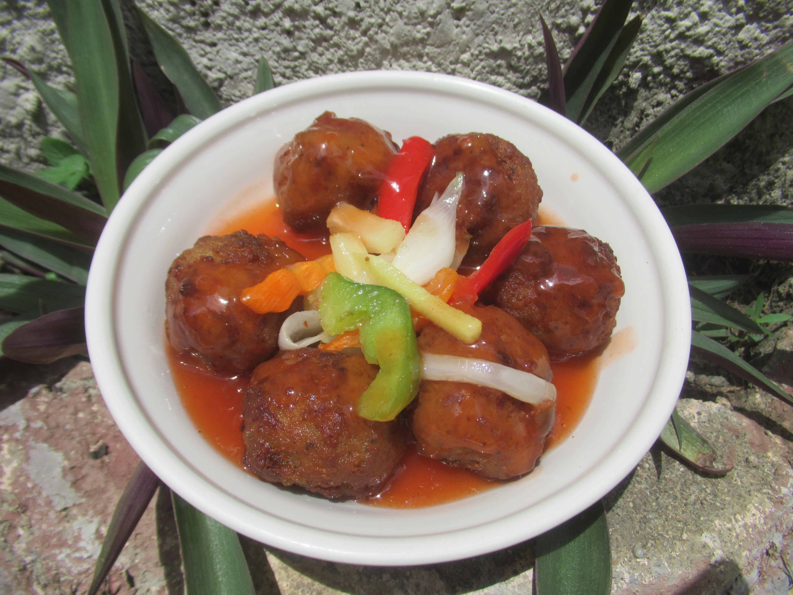

Sweet and Sour Meatballs

Description
Meatballs with an amazing sweet and sour sauce
Ingredients
- 1 pound ground beef
- 1 egg
- 4 tablespoons cornstarch
- 1 teaspoon salt
- 4 tablespoons diced onion
- 1 pinch ground black pepper
- 1 tablespoon vegetable oil
- 1 cup pineapple juice
- 1 tablespoon soy sauce
- 3 tablespoons white vinegar
- 6 tablespoons water
- 1/2 cup granulated sugar
- 4 slices pineapple, cubed
- 1 green bell pepper, sliced into thin strips
- 1/4 carrot, thinly sliced
- 1/3 onion, cut into wedges
Steps
- In a bowl, combine ground beef, egg, cornstarch, salt, diced onion, and pepper. Form into 1-inch meatballs.
- In a pan, over medium heat, brown meatballs.
- Heat oil in large pan over low heat. Pour pineapple juice and let simmer.
- In a bowl, combine cornstarch, soy sauce, vinegar, and water. Stir until smooth, then pour pineapple juice. Continue to add sugar and stir until thickened.
- Put meatballs, pineapple pieces, green pepper, carrot, and onion in the mixture. Mix thouroughly.
Home